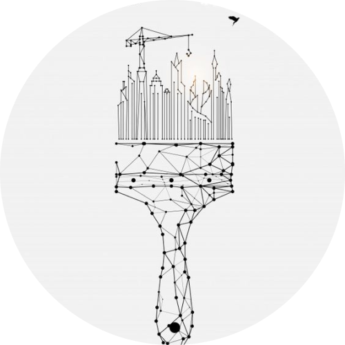
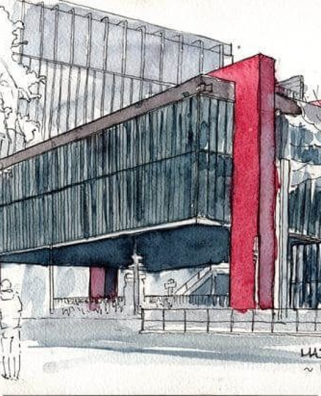
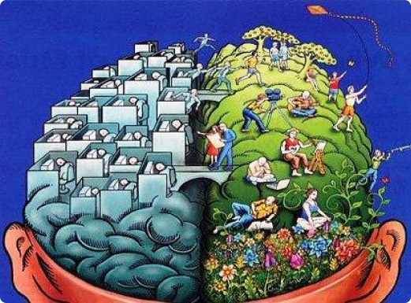

BACHARELADOO que é bacharelado?O bacharelato ou bacharelado é um grau académico com diferentes características
conforme a época e o país. O titular de um bacharelato é designado bacharel ou bacharela.O bacharelado é uma formação de nível superior que confere grau de bacharel. Com duração média entre 3 e 6 anos, o curso de
bacharelado prepara profissionais generalistas com sólidos conhecimentos sobre a base de uma profissão.
Os cursos de bacharelado podem ser encontrados em faculdades públicas e privadas, nos formatos presencial e a distância.AdministraçãoO bacharelado em administração é um curso de iniciação cujo objetivo é formar profissionais aptos a administrar organizações
públicas, privadas ou do terceiro setor. É um curso bastante popular e reconhecido no Brasil e em outros países, oferecido por
diversas universidades e faculdades.
Ao se formar, os bacharéis em administração podem atuar em diversos setores e cargas em uma organização, como gerente de
recursos humanos, gerente de marketing, gerente financeiro, consultor empresarial, entre outros. Também podem atuar em
empresas próprias, como empreendedores, abrindo seu próprio negócio ou consultoria.
O curso de bacharel em administração é bastante amplo, o que possibilita ao profissional atuar em diversos segmentos e áreas. É
um curso que exige muita dedicação e comprometimento do aluno, uma vez que aborda uma grande variedade de temas e
disciplinas. O mercado de trabalho para profissionais de administração é amplo, com boas oportunidades de emprego e
possibilidade de ascensão profissional.Habilidades necessárias:
● Comunicação
● Liderança
● Resolução de problemas
● Pensamento crítico
● Gestão de tempo
● Trabalho em equipe
● Negociação
● Pensamento estratégico
● Ética e responsabilidade socialTempo de duração do curso:
Em geral, no Brasil, o curso de Administração tem uma duração média de 4 anos,
divididos em 8 semestres. Cada semestre geralmente tem uma carga horária de
disciplinas específicas que devem ser concluídas para obter o diploma de
graduação em Administração. Já na Pós-Graduação, isso pode variar segundo o
nível e a modalidade escolhidos.
Grade curricular:Mercado de Trabalho:
Um bacharel em Administração tem diversas opções de atuação no mercado de trabalho. Ele pode trabalhar na gestão
empresarial, envolvendo planejamento estratégico, recursos humanos, finanças, operações e marketing. Também pode atuar na
área de Recursos Humanos, lidando com recrutamento, seleção, treinamento e desenvolvimento. Outra possibilidade é nas áreas
de Finanças e Contabilidade, abrangendo planejamento financeiro, análise de investimentos e gestão de custos. O profissional
também pode trabalhar em Marketing e Vendas, consultoria, empreendedorismo, logística, gestão de projetos, entre outras áreas.
O mercado oferece oportunidades em empresas de diversos setores, órgãos governamentais e empreendimentos próprios.Média salarial:
Assistente administrativo: Entre R$ 1.500,00 a R$ 3.000,00;
Analista Administrativo: Entre R$ 3.000,00 a R$ 6.000,00;
Gerente/Administrador de Departamento: Entre R$ 6.000,00 a R$ 12.000,00;
Gerente Administrativo/Diretor Administrativo: Entre R$ 10.000,00 a R$ 25.000,00.

ArquiteturaO bacharelado em Arquitetura é um curso de graduação que prepara os estudantes para se
tornarem arquitetos profissionais.
Os estudantes de bacharelado em arquitetura geralmente começam aprendendo habilidades
básicas de desenho e design, incluindo desenho à mão livre e uso de softwares de CAD
(desenho assistido por computador). Conforme avançam no curso, os estudantes se concentram
em tópicos mais avançados, como planejamento urbano, arquitetura sustentável e tecnologia de
construção.
Após a conclusão do curso de bacharelado em arquitetura, os estudantes devem realizar um
período de estágio obrigatório, conhecido como estágio profissional supervisionado. Esse
estágio permite que os alunos ganhem experiência prática em projetos reais de construção
e desenvolvam habilidades profissionais. Após a conclusão do estágio, os alunos precisam passar
por um exame de qualificação profissional para obter a licença de arquiteto.]

Habilidades necessárias:
● Criatividade
● Habilidades de desenho
● Pensamento espacial
● Aptidão técnica
● Conhecimento histórico e cultural
● Boa comunicação
● Pensamento crítico
● Habilidades de pesquisa
● Conhecimentos em software de design
● Capacidade de trabalho em equipeTempo de duração do curso:
O programa de bacharelado em arquitetura é geralmente um curso de
cinco anos, incluindo um período de estágio obrigatório. A maioria das
universidades e faculdades brasileiras oferece o curso em período
integral, com carga horária intensiva que abrange disciplinas teóricas,
práticas e estágios supervisionados. Além disso, alguns profissionais
optam por seguir a formação acadêmica com cursos de pós-graduação,
como especialização, mestrado e doutorado, para
aprofundar seus conhecimentos e se especializar em áreas específicas
da arquitetura.Grade curricular:Mercado de Trabalho:
O mercado de trabalho para o profissional formado no curso de
Arquitetura está em expansão, principalmente devido ao aumento das
construções de obras no país, em virtude da Copa do Mundo de 2014 e
dos Jogos Olímpicos em 2016. Os profissionais que possuem um
entendimento da sociedade e das transformações que nela ocorrem
são os que o mercado apresenta maior carência. O aluno formado no
curso de Arquitetura também pode atuar no campo da construção civil
ou no setor público. As regiões sudeste e sul são as que apresentam as
melhores oportunidades de emprego para o profissional dessa área.Média salarial:
Pequena empresa: entre R$ 2.500,00 e R$ 6.500,00
Média empresa: entre R$ 3.500,00 e R$ 8.500,00
Grande empresa: entre R$ 4.500,00 e R$ 10.000,00SociologiaO bacharelado em Sociologia é um curso de graduação que se dedica ao estudo
científico da sociedade, das relações sociais e das estruturas sociais. Durante o
curso, os alunos aprendem a analisar e compreender os processos sociais, as
instituições, as dinâmicas de grupo, as desigualdades sociais, os fenômenos
culturais, psicológicos e psicológicos, entre outros aspectos que influenciam a vida
em sociedade.
Os sociólogos formados podem seguir diversas carreiras em áreas como pesquisa
social, planejamento urbano, gestão pública, consultoria, ensino, organizações não
governamentais (ONGs), mídia, entre outras. Eles podem trabalhar tanto no setor
público quanto no privado, confiantes para a compreensão dos fenômenos sociais
e para a formulação de políticas públicas.O currículo do bacharel em Sociologia inclui disciplinas teóricas, metodológicas e práticas, visando fornecer aos alunos uma base
sólida em teorias sociológicas, métodos de pesquisa social e análise de dados. Além disso, os alunos são incentivados a
desenvolver habilidades críticas de pensamento, interpretação e argumentação.

Habilidades necessárias:
● Facilidade para a análise de informações e realização de pesquisas;
●Capacidade de ser provocativo de modo imparcial;
● Desenvolvimento do pensamento analítico e crítico;
●Gosto por estudar, debater e ler;
● Afinidade com temas que se relacionam às ciências sociaisTempo de duração do curso:
A faculdade de Sociologia, dura, em média, 4 anos, com 8 semestres
onde o aluno trabalhará fazendo pesquisas sociológicas no mundo
acadêmico, mercadológico ou na administração pública. O período no
qual o aluno poderá realizar seus estudos nas modalidades presencial
e a distância.Mercado de Trabalho:
O mercado de trabalho para o sociólogo é variado e depende das demandas da sociedade e dos setores que contratam esse
profissional. Algumas opções são o serviço público das esferas federal, estadual e municipal, os institutos de pesquisa, as
empresas de consultoria, as empresas privadas de diferentes setores e as organizações não governamentais.
O profissional pode atuar em diversas áreas, como: Docência no ensino médio ou superior, desde que tenha a formação adequada;
Pesquisa social, eleitoral, científica, de mercado ou de opinião pública;
Criação de políticas públicas, assessoria a partidos políticos, elaboração e revisão de textos sobre assuntos sociais e políticos;
Consultoria para empresas, coordenação e avaliação de projetos sociais.Grade curricular:Média salarial:
Coordenador de projetos sociais: Entre R$ 2.140,00 a R$ 5.189,00.
Analista de políticas públicas: Entre R$ 1.376,03 a R$ 6.020,00.
Consultor empresarial: Entre R$ 3.021,00 a R$ 9.530,00.
Pesquisador social: Entre R$ 1.326,00 a R$ 12.197,34.DireitoO bacharelado em direito é um curso de graduação que tem como objetivo formar
profissionais na área jurídica. É uma das principais opções para aqueles que desejam se
tornar advogados, promotores, juízes, procuradores, defensores públicos ou atuarem em
diversas outras carreiras relacionadas ao campo do direito.
Após concluir o bacharelado em direito, é necessário passar no exame da Ordem dos
Advogados do Brasil (OAB) para obter a licença profissional e poder exercer a advocacia.
Além disso, muitos profissionais de direito optam por prosseguir os estudos e realizar
uma especialização, mestrado ou doutorado em uma área específica do direito para
aprofundar seus conhecimentos e se destacar no mercado de trabalho.
Durante o curso de bacharelado em direito, os estudantes adquirem conhecimentos
teóricos e práticos sobre os diferentes ramos do direito, como direito civil, direito penal,
direito constitucional, direito administrativo, direito do trabalho, entre outros. Eles
aprendem sobre a legislação vigente, a estrutura e funcionamento do sistema jurídico e
desenvolvem habilidades analíticas e de argumentação jurídica.Habilidades necessárias:
● Análise e interpretação
● Pesquisa
● Argumentação
● Comunicação
● Resolução de problemasTempo de duração do curso:
Em geral, no Brasil, o curso de Direito tem uma duração média
de 5 anos, divididos em 10 semestres. Para advogar, não adianta
apenas ter cursado a faculdade, o advogado precisa prestar a
prova da OAB (Ordem dos Advogados do Brasil).Mercado de Trabalho:
O mercado de trabalho de Direito é amplo e está
constantemente em expansão. Por ser uma área que pode
ser atuada de diversas formas é um contribuinte para a
empregabilidade. Quem faz Direito pode escolher, tanto em
órgãos públicos quanto na iniciativa privada. O profissional
que está entrando no mercado pode optar por seguir carreira
jurídica ou atuar na advocacia. Alguns lugares onde o
profissional pode trabalhar são em empresas, tribunais,
ministério público, escritórios de advocacia, entre outros.
Quem faz direito também pode se tornar um advogado geral,
juiz, delegado, defensor público, procurador estadual, etc.Média salarial:
Advogado da União: Entre R$ 1.038,00 a R$ 17.051,00;
Defensor Público Federal: Entre R$ 16.000,00 a R$ 24.668,75.
Delegado da Polícia Federal: Entre R$ 20.000,00 a R$ 37.549,00.
Procurador da República: Entre R$ 37.878,00 a R$ 41.152,00;
Juiz Federal: Entre R$ 10.000,00 a R$ 42.000,00;Grade curricularTeologiaO Bacharel em Teologia é um curso de graduação que oferece uma formação
acadêmica em estudos teológicos. Ele é voltado para aqueles que desejam
aprofundar seu conhecimento sobre as escrituras sagradas, a história das
religiões, a teologia cristã e outros campos relacionados.
Os graduados em Teologia podem seguir carreiras em organizações religiosas,
instituições de ensino, editoras religiosas, organizações sem fins lucrativos ou
até mesmo buscar estudos avançados em teologia através de programas de
pós-graduação, como o Mestrado e o Doutorado em Teologia.
Durante o curso, os estudantes têm a oportunidade de explorar uma ampla
gama de recursos teológicos, incluindo estudos bíblicos, doutrinas religiosas,
ética, filosofia da religião, história da igreja e teologia sistemática. O currículo
também pode incluir disciplinas específicas de acordo com a tradição religiosa
em que o curso está inserido, como teologia católica, protestante, judaica ou
islâmica.Habilidades necessárias:
● Boa interpretação de texto
● Multidisciplinaridade
● Senso de reflexão
● Empatia e sensibilidade
● Comunicação
●LiderançaTempo de duração do curso:
A faculdade de Teologia, dura, em média, 3 anos,
com 6 semestres onde o aluno estudará as religiões e
os aspectos relacionados a ela como rituais,
doutrinas, códigos, textos sagrados, baseando-se
em conceitos e teorias de filosofia, história,
psicologia e sociologia.Mercado de Trabalho:
O mercado de trabalho para os bacharéis em Teologia pode
variar dependendo dos interesses, habilidades e
especializações do indivíduo. Algumas opções são
Aconselhamento espiritual, administração de instituições
religiosas, ministério religioso, atividades editoriais, educação
religiosa, pesquisa a academia, entre outros.
É importante ressaltar que, em algumas áreas, podem ser
necessárias especializações adicionais, como estudos de pós-graduação
ou formação complementar em áreas específicas,
para aumentar as oportunidades de emprego e o avanço na
carreira.Média salarial:
Missionário: Entre R$1.410,00 a R$1.927,00.
Conselheiro espiritual: Entre R$ 1.387,70 a R$ 3.664,38.
Pastor: Entre R$ 2.071,00 a R$ 4.918,00.
Padre: Entre R$ 1.961,00 a R$ 6.450,76.
Administrador de instituições religiosas: Entre R$ 1.122,33 a R$ 11.679,28.Grade curricularJornalismoBacharelado em Jornalismo é um curso de graduação de nível superior cujo
objetivo é formar profissionais aptos a atuarem na área jornalística, em
diversos veículos de comunicação.
O Bacharelado em Jornalismo oferece ao estudante uma formação completa
para a prática jornalística, com a possibilidade de desenvolver habilidades em
diferentes áreas, como reportagem, edição, fotografia, audiovisual, entre
outras. Além disso, a formação teórica do curso proporciona uma visão crítica
sobre a atuação da imprensa na sociedade, preparando o profissional para
lidar com os desafios da profissão de forma ética e responsável.Habilidades necessárias:
● Comunicação efetiva
● Curiosidade e vontade de aprender
● Pensamento crítico
● Boa escrita
● Ética e responsabilidade
● Habilidades multimídia
● Organização e gerenciamento do tempoTempo de duração do curso:
O curso tem duração média de 4 anos e oferece
uma formação mais ampla e aprofundada do que
o curso de Tecnólogo em Jornalismo, com
disciplinas teóricas e práticas que visam
desenvolver a habilidade do aluno em produzir,
apurar e interpretar informações de interesse
público.Grade curricularMercado de Trabalho:
Um bacharel em jornalismo tem diversas oportunidades de atuação,
como jornalismo impresso, online, televisão, rádio, assessoria de
imprensa e jornalismo investigativo. Também é possível se especializar
em segmentos específicos, como esportes, moda ou ciência. A
formação em jornalismo permite informar, investigar e influenciar a
sociedade por meio da produção de conteúdo relevante e de qualidade.Média salarial:
Estágio: entre R$ 800,00 e R$ 1.000,00
Analista: entre R$ 1.500,00 e R$ 3.200,00
Redator: em média R$ 1.800,00
Assessor: em média R$ 2.500,00
Repórter: em média R$ 2.800,00
Gerente: em média R$ 6.200,00